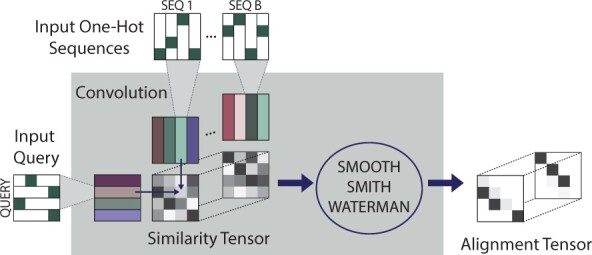
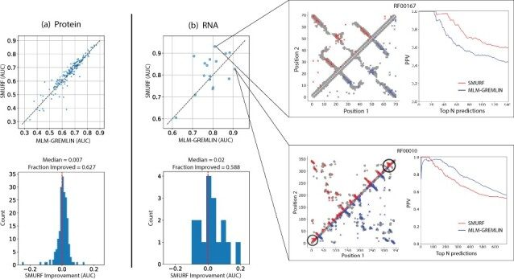
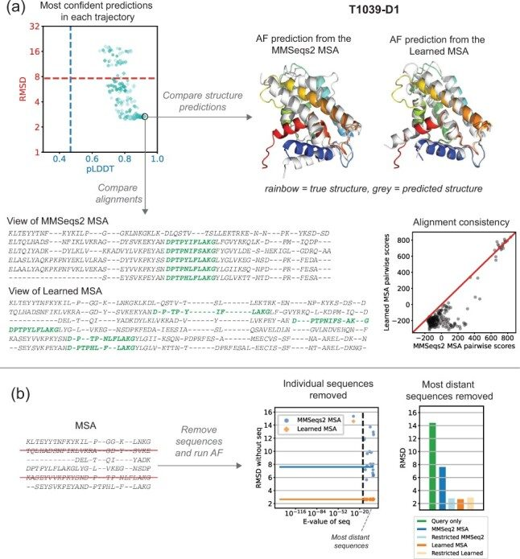
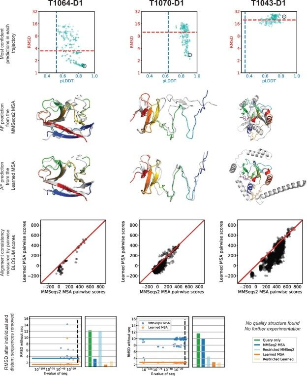

Unified Model of Protein Evolution
End-to-end learning of multiple sequence alignments with differentiable Smith-Waterman
Abstract
AbstractMotivationMultiple sequence alignments (MSAs) of homologous sequences contain information on structural and functional constraints and their evolutionary histories. Despite their importance for many downstream tasks, such as structure prediction, MSA generation is often treated as a separate pre-processing step, without any guidance from the application it will be used for.ResultsHere, we implement a smooth and differentiable version of the Smith–Waterman pairwise alignment algorithm that enables jointly learning an MSA and a downstream machine learning system in an end-to-end fashion. To demonstrate its utility, we introduce SMURF (Smooth Markov Unaligned Random Field), a new method that jointly learns an alignment and the parameters of a Markov Random Field for unsupervised contact prediction. We find that SMURF learns MSAs that mildly improve contact prediction on a diverse set of protein and RNA families. As a proof of concept, we demonstrate that by connecting our differentiable alignment module to AlphaFold2 and maximizing predicted confidence, we can learn MSAs that improve structure predictions over the initial MSAs. Interestingly, the alignments that improve AlphaFold predictions are self-inconsistent and can be viewed as adversarial. This work highlights the potential of differentiable dynamic programming to improve neural network pipelines that rely on an alignment and the potential dangers of optimizing predictions of protein sequences with methods that are not fully understood.Availability and implementationOur code and examples are available at: https://github.com/spetti/SMURF.Supplementary information Supplementary data are available at Bioinformatics online.
1 Introduction
Multiple sequence alignments (MSAs) are commonly used in biology to model evolutionary relationships and the structural/functional constraints within families of proteins and RNA. MSAs are a critical component of the latest contact (Balakrishnan et al., 2011; Jones et al., 2012; Morcos et al., 2011) and protein structure prediction pipelines (Baek et al., 2021; Jumper et al., 2021). Moreover, they are used for predicting the functional effects of mutations (Figliuzzi et al., 2016; Frazer et al., 2021; Hopf et al., 2017; Sundaram et al., 2018), phylogenetic inference (Felsenstein and Felenstein, 2004) and rational protein design (Goldenzweig et al., 2016; Ma et al., 2016; Russ et al., 2020; Tian et al., 2018). Creating alignments, however, is a challenging problem. Standard approaches use heuristics for penalizing substitutions and gaps and do not take into account the effects of contextual interactions (Steinegger et al., 2019) or long-range dependencies. For example, these local approaches struggle when aligning large numbers of diverse sequences, and additional measures (such as the introduction of external guide Hidden Markov Models, HMMs) must be introduced to obtain reasonable alignments (Sievers and Higgins, 2014). Finally, each alignment method has a number of hyperparameters which are often chosen on an application-specific basis. This suggests that computational methods that input an MSA could be improved by jointly learning the MSA and training the method.
Here, we introduce the Learned Alignment Module (LAM), which is a fully differentiable module for constructing MSAs and hence can be trained in conjunction with another differentiable downstream model. Building upon the generalized framework for differentiable dynamic programming developed in Mensch and Blondel (2018), LAM employs a smooth and differentiable version of the Smith–Waterman algorithm. Whereas the classic implementation of the Smith–Waterman algorithm outputs a pairwise alignment between two sequences that maximizes an alignment score (Smith and Waterman, 1981), the smooth version outputs a distribution over alignments. This smoothness is crucial to: (i) make the algorithm differentiable and therefore applicable in end-to-end neural network pipelines, and (ii) allow the method to consider multiple hypothesized alignments simultaneously, which we believe to be a beneficial feature early in training.
We demonstrate the utility of LAM with two differentiable pipelines. First, we design an unsupervised contact prediction method that jointly learns an alignment and the parameters of a Markov Random Field (MRF) for RNA and protein, which we use to infer better structure-based contact maps. Next, we connect our differentiable alignment method to AlphaFold2 [here referred to as AlphaFold, as in Jumper et al. (2021)] to jointly infer an alignment that improves its prediction of protein structures. We find that the alignments that improve structure prediction are nonsensical, revealing unexpected behavior of AlphaFold. Our main contributions are as follows:

1.1 Related work
1.1.1 Differentiable dynamic programming in natural language processing
Differentiable dynamic programming algorithms are needed in order to model combinatorial structures in a way that allows backpropagation of gradients (Berthet et al., 2020; Mensch and Blondel, 2018; Vlastelica et al., 2019). Such algorithms have been used in natural language processing to build neural models for parsing (Durrett and Klein, 2015), grammar induction (Kim et al., 2019), speech (Cai and Xu, 2019) and more. Smooth relaxations of argmax and other non-differentiable functions can enable differentiation through dynamic programs. More generally, Mensch and Blondel (2018) leverage semirings to provide a unified framework for constructing differentiable operators from a general class of dynamic programming algorithms. This work has been incorporated into the Torch-Struct library (Rush, 2020) to enable composition of automatic differentiation and neural network primitives, was recently implemented in Julia (Stock, 2021), and is the basis for our JAX implementation of SSW.
1.1.2 Smooth and differentiable alignment in computational biology
Before end-to-end learning was common, computational biologists used pair HMMs to express probability distributions over pairwise alignments (Durbin et al., 1998; Knudsen and Miyamoto, 2003; Miyazawa, 2000). The forward algorithm applied to a pair HMM can be viewed as a smoothed version of Smith–Waterman. Later, a differentiable kernel-based method for alignment was introduced (Saigo et al., 2006). More recently, Morton et al. implemented a differentiable version of the Needleman–Wunsch algorithm for global pairwise alignment (Morton et al., 2020; Needleman and Wunsch, 1970). Our implementation has several advantages: (i) vectorization makes our code faster (Supplementary Fig. S2 and Section S4.3), (ii) we implemented local alignment and an affine gap penalty (Supplementary Section S4.4) and (iii) due to the way gaps are parameterized, the output of Morton et al. (2020) cannot be interpreted as an expected alignment (Supplementary Section S4.2). Independent and concurrent work (Llinares-López et al., 2021) uses a different formulation of differentiable Smith–Waterman involving Fenchel-Young loss.
1.1.3 Language models, alignments and MRFs
Previous work combining language model losses with alignment of biological sequences place the alignment layer at the end of the pipeline. Bepler and Berger (2018) first pretrain a bidirectional RNN language model, then freeze this model and train a downstream model using a pseudo-alignment loss. Similarly, Morton et al. (2020) use a pretrained language model to parametrize the alignment scoring function. Their loss, however, is purely supervised based on ground-truth structural alignments. Llinares-López et al. (2021) use differentiable Smith–Waterman with masked language modeling (MLM) and supervised alignments to learn a scoring function derived from transformer embeddings. For RNA, a transformer embedding has been trained jointly with an MLM and structural alignment (Akiyama and Sakakibara, 2021). In contrast to all of these papers, our alignment layer is in the middle of the pipeline and is trained end-to-end with a task downstream of alignment.
Joint modeling of alignments and Potts models has been explored. Kinjo (2016) include insertions and deletions into a Potts model using techniques from statistical physics. Two other works infer HMM and/or Potts parameters through importance sampling (Wilburn and Eddy, 2020) and message passing (Muntoni et al., 2020), with the goal of designing generative classifiers for protein homology search.
2 Materials and methods
2.1 Smooth Smith–Waterman
Pairwise sequence alignment is the task of finding an alignment of two sequences with the highest score, where the score is the sum of the ‘match’ scores for each pair of aligned residues and ‘gap’ penalties for residues that are unmatched. The Smith–Waterman algorithm is a dynamic programming algorithm that returns a path with the maximal score. A smooth version instead finds a probability distribution over paths in which higher scoring paths are more likely. Smoothness and differentiability can be achieved by replacing the max with logsumexp and argmax with softmax in the dynamic programming algorithm. We implemented an SSW formulation in which the probability that any pair of residues is aligned can be formulated as a derivative (Supplementary Sections S1 and S4). We use JAX due to its JIT (‘just in time’) compilation and automatic differentiation features (Bradbury et al., 2018).
Our speed benchmark indicates that our implementation is faster than the smooth Needleman–Wunsch implementation in Morton et al. (2020) for both a forward pass as well as for the combined forward and backward passes (see Supplementary Fig. S2). The latter is relevant when using the method in a neural network pipeline requiring backprogation. Moreover, comparison between a vectorized and naive version of our code shows that vectorization substantially reduces the runtime, see Wozniak (1997) and Supplementary Section S4.3. Vectorization in both sequence length and batch dimension accounts for the speed improvement over the Needleman–Wunsch implementation in Morton et al. (2020), which is only vectorized over the batch dimension.
Our SSW has four other features: temperature, affine gap, retrict turns and global alignment. A temperature parameter governs the extent to which the distribution concentrated on the highest scoring alignments. In the affine gap mode, the first gap in a streak incurs an ‘open’ gap penalty and all subsequent gaps incur an ‘extend’ gap penalty. A restrict turns option corrects for the algorithm’s inherent bias toward alignments near the diagonal. We also implemented Needleman–Wunsch to output global alignments rather than local alignments. See Supplementary Section S4.4 for additional details of SSW options.
2.2 Learned alignment module
The key to improving a Smith–Waterman alignment is finding the right input matrix of alignment scores . Typically, when Smith–Waterman is used for pairwise alignment the alignment score between positions i and j, aij, is given by a BLOSUM or PAM score for the pair of residues Xi and Yj (Altschul et al., 1997; Dayhoff and Eck, 1972; Henikoff and Henikoff, 1992). This score reflects how likely it is for one amino acid to be substituted for another, but does not acknowledge the context of each residue in the sequence. For example, consider serine, an amino acid that is both small and hydrophilic. In a water-facing part of a protein, serine is more likely to be substituted for other hydrophilic amino acids. In other contexts, serine may only be substituted for other small amino acids due to the geometric constraints of the protein fold. Employing a scoring function with convolutions allows for local context to be considered.
Our proposed LAM adaptively learns a context-dependent alignment score matrix aij, performs an alignment based on this score matrix, all in conjunction with a downstream machine learning task. The value aij expresses the similarity between Xi in the context of and Yj in the context of . We represent position i in sequence X as a vector obtained by applying a convolutional layer of window size to a one-hot encoding of Xi and its neighbors. The dimension of the vectors is the number of convolutional filters (here 512). The value aij in the similarity matrix that we input to Smith–Waterman is the dot product of the corresponding vectors, To construct an MSA from a reference and B other sequences, the LAM constructs a similarity matrix between each sequence and the reference, applies differentiable Smith–Waterman to each similarity matrix, and outputs an alignment of each sequence to the reference (which can be viewed as an MSA) (see Fig. 1). Since this process is entirely differentiable, we can plug the alignment produced by the LAM into a downstream module, compute a loss function, and train the whole pipeline end-to-end.
We confirmed that the similarity scores learned by LAM are much more expressive than BLOSUM scores. Supplementary Figures S6 and S7 illustrate the distribution of similarity scores learned by the LAM when trained in the context of our contact prediction method SMURF. Unlike in the BLOSUM scoring scheme, the score between a pair of amino acids is not simply a function of their identities; instead the score can range substantially depending on the contexts. Moreover, the distribution of scores varies between families.
3 Results
3.1 Applying the LAM to contact prediction
GREMLIN is a probabilistic model of protein variation that uses the MSA of a protein family to estimate parameters of an MRF (see Supplementary Section S2.1), which in turn are used to predict contact maps (Balakrishnan et al., 2011; Ekeberg et al., 2013; Kamisetty et al., 2013; Ovchinnikov et al., 2014). Since GREMLIN relies on an input MSA, one would expect that improved alignments would yield better contact prediction results. To test this, we designed a pipeline for training a GREMLIN-like model that inputs unaligned sequences and jointly learns the MSA and MRF parameters. We call our method Smooth Markov Unaligned Random Field or SMURF.
SMURF takes as input a family of unaligned sequences and learns both (i) the LAM convolutions and (ii) the parameters of the MRF that are, in turn, used to predict contacts. SMURF has two phases, each beginning with the LAM. First, BasicAlign learns LAM convolutions by minimizing the squared difference between each aligned sequence and the corresponding averaged MSA (Supplementary Fig. S8). This objective (Supplementary Equation S4) encourages alignments where each column is predominantly composed of one or a few specific residues and allows the network to learn convolutions that yield a reasonable alignment before being tasked with deducing pairwise correlations (MRF parameters). These convolutions are then used to initialize the LAM for the second training phase, TrainMRF, where an MLM objective is used to learn MRF parameters and update the convolutions, allowing the network to adjust the alignment (Supplementary Fig. S9). In MLM, random residues in the input are masked and the network uses the energy function described by the MRF parameters to compute a guess (represented as a distribution over residues) for each masked residue. The objective function (Supplementary Equation S6) is a combination of the cross entropy loss of these guesses and regularization terms for the MRF parameters. For further details, see Supplementary Section S2.3.
We compare SMURF to GREMLIN trained with MLM (MLM-GREMLIN) as in Bhattacharya et al. (2020). The architecture of MLM-GREMLIN is similar to TrainMRF step of SMURF, except that a fixed alignment is input instead of a learned alignment computed by LAM.
We trained and evaluated our model on a diverse set of protein families, as described in Supplementary Section S2.2. Our model was trained separately on each family (i.e. different convolutions are learned for each family), and the families in the training set were used to select the hyper-parameters and network architecture. To evaluate the accuracy of downstream contact prediction, we computed a standard metric used to summarize contact prediction accuracy, i.e. the area under the curve (AUC) for a plot of fraction of top t predicted contacts that are correct for t equals 1 up to L, where L is the length of the protein. Figure 2a illustrates that SMURF mildly outperforms MLM-GREMLIN with a median AUC improvement of 0.007 across 193 protein families in the test set. To test whether SMURF requires a deep alignment with many sequences, we ran SMURF on protein families at most 128 sequences. The performance of SMURF and MLM-GREMLIN are comparable even for these families with relatively few sequences, with a median AUC improvement of 0.002 (Supplementary Fig. S11).

Next, we sought to compare qualities of the MSAs learned through SMURF and MSAs fed into GREMLIN, which were generated with HHblits (Steinegger et al., 2019). To quantify the consistency of the MSAs, we compared the BLOSUM scores (Henikoff and Henikoff, 1992) of all pairwise alignments extracted from our learned MSA to those extracted from the HHblits MSA. By this metric, we found that alignments learned by SMURF were more consistent than those from HHblits. Moreover, we observed a slightly positive correlation between increased consistency and contact prediction improvement (Supplementary Fig. S10, left). We also found that SMURF alignments tend to have more positions aligned to the query (Supplementary Fig. S10, right). We hypothesize that this is because our MRF does not have a mechanism to intelligently guess the identity of residues that are insertions with respect to the query sequence (the guess is uniform, see Supplementary Section S2.3).
Next, we applied SMURF to 17 non-coding RNA families from Rfam (Kalvari et al., 2021) that had a corresponding structure in PDB (see Supplementary Section S2.2). Due to the relatively small number of RNAs with known 3D structures, we employed SMURF using the hyperparameters optimized for proteins; fine-tuning SMURF for RNA could improve performance. Overall, we observe that SMURF outperforms MLM-GREMLIN with a median AUC improvement of 0.02 (Fig. 2b). Despite choosing hyperparameters for our network based on protein examples, we see comparatively stronger improvement in RNA. Since our alignments are trained in conjunction with an MRF, covariation patterns inform the alignments. Our observation suggests that there is more to be gained from incorporating covariation into RNA alignment methods as compared to proteins.
In Supplementary Section S5, we further discuss the RNA contact predictions illustrated in Figure 2b and the SMURF predictions for the three most and least improved protein families (Supplementary Figs S12 and S13). We hypothesize that SMURF generates fewer false positive predictions in seemingly random locations because the LAM finds better alignments.
Finally, we performed an ablation study on SMURF (Supplementary Fig. S14). We found that replacing SSW with a differentiable ‘pseudo-alignment’ procedure, similar to Bepler and Berger (2018), degraded performance substantially. Skipping BasicAlign also degraded performance, thus indicating the importance of the initial convolutions found in BasicAlign.
3.2 Using backprop through AlphaFold to learn alignments with LAM
Next, we tested whether jointly learning an alignment with AlphaFold could improve structure prediction. While our experiment found this to be possible, the more interesting takeaway was our finding that AlphaFold sometimes makes better predictions from strikingly low-quality alignments as compared to sensible alignments of the same sequences. For our experiment, we selected four CASP14 domains where the structure prediction quality from AlphaFold was especially sensitive to how the MSA was constructed (see Supplementary Section S3.1). We reasoned that the quality was poor due to issues in the MSA and by realigning the sequences using AlphaFold’s confidence metrics we may be able to improve on the prediction quality.
For each of the four selected CASP targets, separate LAM parameters were fit to maximize AlphaFold’s predicted confidence metrics (see Supplementary Section S3.2). We repeated this 180 times for each target (varying the learning rates, random seeds and smoothness of the alignment), and then selected the learned MSA corresponding to the most confident AlphaFold (AF) prediction as measured by AF’s predicted local Distance Difference Test (pLDDT). For all targets, AF reported higher confidence in the prediction from our learned MSA as compared to the prediction from an MSA with the same sequences generated by MMSeqs2 as implemented in ColabFold (Mirdita et al., 2021). However, only three of the four targets showed an improvement in the structure prediction, as measured by the RMSD (root-mean-squared-distance) to native structure (see Figs 3 and 4).


Next, we compared the learned MSAs that led to better structure predictions to the MMSeqs2 MSAs. Evaluating the learned MSAs by eye, we found our learned MSAs to be strikingly low quality. We saw many examples of inconsistently aligned motifs and even pairs of nearly identical sequences exhibiting completely different alignments with the query. Figure 3a illustrates a conserved motif that is consistently aligned in the MMSeqs2 MSA yet completely scattered in our learned MSA. Next, we designed a method to quantify the quality issues in our learned alignments. We compared the BLOSUM scores (Henikoff and Henikoff, 1992) of all pairwise alignments extracted from our learned MSAs to those extracted from the MMSeqs2 MSA. Indeed, the learned MSAs contain much lower scoring pairwise alignments than those of MMSeqs2 MSAs, indicating far less consistency (Figs 3a and 4), which is the opposite trend we observed for MSAs learned by SMURF. Thus, unlike optimizing the MRF in SMURF, optimizing the confidence of AF predictions does not yield consistent alignments with LAM.
We explored a simple explanation for how low-quality alignments could yield improved structure predictions; perhaps AF uses its axial-like attention to consider only a subset of sequences, and the poor alignments by the other sequences isn’t important or could further disqualify those sequences from being attended to. To investigate this, we evaluated how sensitive the AF predictions are to the inclusion of each individual sequence (Figs 3b and 4). Surprisingly, the prediction accuracy can be incredibly sensitive to the removal of a single sequence, especially for MMSeqs2 MSAs.
Next, we considered the effect of removing subsets of more distant sequences. The MMSeqs2 MSAs were constructed with a lenient E-value threshold of 10, which may introduce sequences in the MSA that are not true homologs. For targets T1064-D1 and T1070-D1, we removed all sequences with an E-value smaller than . The target T1064-D1 has two sequences above this threshold (E-values 1.4 and 0.16) that almost certainly are not homologs of the query. (E-value, defined as P-value multiplied by the size of database, indicates the how many matches with detected similarity are expected to occur by chance alone.) While removing either individually does not substantially change the accuracy of the prediction, removing both worsens the prediction with the MMSeqs2 MSA significantly (RMSD 3.46 to 12.11) and worsens the prediction with our learned MSA mildly (RMSD 1.47 to 2.48). In T1070-D1 we realized the opposite outcome; removing the sequences with E-value at least greatly improved the prediction with the MMSeqs2 MSA (RMSD 9.91 to 4.51) and slightly improved the prediction with our learned MSA (RMSD 2.75 to 2.70). Noting the influence of the closest homolog (E-value ) on predictions for T1039-D1, we defined most distant sequences for this target as those with E-value greater than , leaving only the closest homolog. Restricting to the query and this single homolog improved the MMSeqs2 prediction substantially (RMSD 7.62 to 2.79), bringing it on par with the prediction from our learned MSA on the full set of sequences (RMSD 2.66). The inclusion of this single close homolog is vital; the RMSD of the prediction for the query sequence alone is 11.56.
Finally, we repeated our optimization experiment after removing the distant sequences (Supplementary Fig. S16a). We found that the most confident MSAs learned without the distant sequences tended to yield predictions with similar RMSD to the predictions from the most confident MSAs learned on the full set of sequences (see orange and purple bars in Supplementary Fig. S16b). We also investigated whether it was easier or harder to obtain ‘near optimal’ structure prediction (having an RMSD of 1.25 times the RMSD of the prediction of the learned MSA on the full set) with the restricted set of sequences as compared to the full set. For T1064-D1 our optimization scheme found ‘near optimal’ structures more often with the set of sequences that includes the distant sequences. The opposite was the case for T1039-D1, and there was no strong difference for T1070-D1 (Supplementary Fig. S16b).
4 Discussion
In this work, we explored the composition of alignment in a pipeline that can be trained end-to-end without usage of any existing alignment software or ground-truth alignments. With SMURF, we trained alignments jointly with a well-understood MRF contact prediction approach and found mild improvement in accuracy using learned MSAs that were consistent and reasonable. When we instead optimized with AlphaFold’s confidence metrics, we found low-quality MSAs that yielded improved structure predictions for three out of four examples. Our result establishes that in some cases AlphaFold can make accurate structure predictions from very low-quality alignments. Therefore, the task of optimizing AlphaFold structure predictions does not force the LAM to learn high-quality alignments. Perhaps by changing our objective function to also penalize self-inconsistent alignments, we could learn more reasonable MSAs while still improving AlphaFold predictions. Our work both establishes the feasibility of pipelines which jointly learn alignments in conjunction with downstream machine learning systems and highlights the possibility of unexpectedly learning odd alignments when it is not well-understood how exactly the downstream task uses alignments.
While our findings that low-quality, self-inconsistent MSAs can yield improved AlphaFold predictions and that AlphaFold predictions may be quite sensitive to the inclusion of particular sequences may seem paradoxical, these observations reflect behaviors found across deep learning systems. It is well-known that deep neural networks are not robust to adversarial noise (Szegedy et al., 2013). Experiments that use an image recognition neural network to optimize an input image so that the image is confidently classified into a particular category will not necessarily yield a human recognizable image of the category (Mordvintsev et al., 2015; Nguyen et al., 2015). Likewise, when we optimize an input alignment to maximize the confidence of the corresponding AlphaFold prediction, we end up with alignments that are nonsensical (e.g. fail to consistently align a clearly conserved motif, as illustrated in Fig. 3a). Studying adversarial examples has been one approach to trying to understand how neural networks form predictions (Gu and Rigazio, 2014; Heo et al., 2019; Mordvintsev et al., 2015). Our differentiable alignment module could be used with AlphaFold to identify a range of alignments that yield a particular prediction. Studying these alignments could provide insight on which aspects of an alignment are used by AlphaFold to make its prediction.
Our SSW implementation is designed to be usable and efficient, and we hope it will enable experimentation with alignment modules in other applications of machine learning to biological sequences. There is ample opportunity for future work to systematically compare architectures for the scoring function in SSW. The use of convolutions led to relatively simple training dynamics, but other inductive biases induced by recurrent networks, attention mechanisms, or hand-crafted architectures could capture other signal important for alignment scoring. Moreover, training one network across protein families (rather than training a separate network for each family) to produce vector encodings of residues and their contexts could be a promising strategy for aligning arbitrary pairs of protein sequences. We also hope that the use of these more powerful and general scoring functions enables applications in remote homology search, structure prediction, or studies of protein evolution.
Besides MSAs, there are numerous other discrete structures essential to analysis of biological sequences. These include Probabilistic Context Free Grammars used to model RNA Secondary Structure (Nawrocki and Eddy, 2013) and Phylogenetic Trees used to model evolution. Designing differentiable layers that model meaningful combinatorial latent structure in evolution and biophysics is an exciting avenue for further work in machine learning and biology.
Supplementary Material
Contributor Information
Samantha Petti, NSF-Simons Center for the Mathematical and Statistical Analysis of Biology, Harvard University, Cambridge, MA 02138, USA.
Nicholas Bhattacharya, Department of Mathematics, University of California Berkeley, Berkeley, CA 94720, USA.
Roshan Rao, Electrical Engineering and Computer Sciences, University of California Berkeley, Berkeley, CA 94720, USA.
Justas Dauparas, Institute for Protein Design, University of Washington, Seattle, WA 98195, USA.
Neil Thomas, Electrical Engineering and Computer Sciences, University of California Berkeley, Berkeley, CA 94720, USA.
Juannan Zhou, Department of Biology, University of Florida, Gainesville, FL 32611, USA.
Alexander M Rush, Department of Computer Science, Cornell Tech, New York, NY 10044, USA.
Peter Koo, Simons Center for Quantitative Biology, Cold Spring Harbor Laboratory, Cold Spring Harbor, NY 11724, USA.
Sergey Ovchinnikov, John Harvard Distinguished Science Fellowship, Harvard University, Cambridge, MA 02138, USA.
References
Associated Data
Supplementary Materials
Data Availability Statement
Links to the data underlying this article are available in our SMURF GitHub repository, at https://github.com/spetti/SMURF.